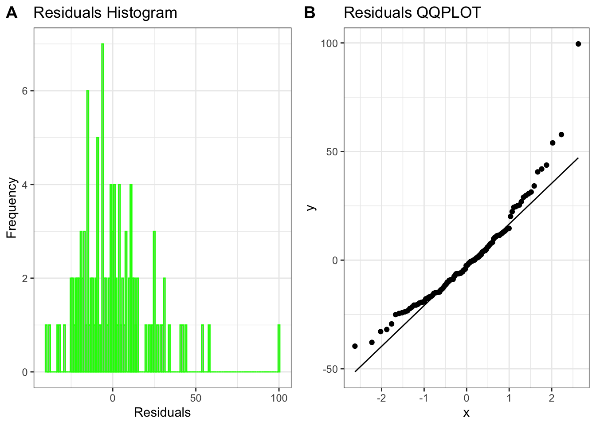
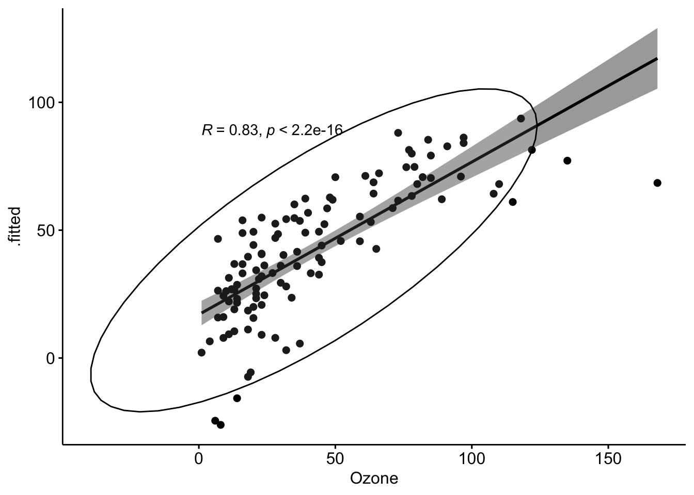

Exploratory Data Analysis and Linear Regression in R
In this assignment, you will again analyze the airquality dataset using various statistical tests, data transformation techniques, and regression modeling. Follow the step-by-step guiding questions to complete the analysis in a qmd.
Part 1: Normality Testing
Load the airquality dataset in R. What does this dataset represent? Explore its structure using functions like str() and summary().
data(airquality)str(airquality)
'data.frame': 153 obs. of 6 variables:
$ Ozone : int 41 36 12 18 NA 28 23 19 8 NA ...
$ Solar.R: int 190 118 149 313 NA NA 299 99 19 194 ...
$ Wind : num 7.4 8 12.6 11.5 14.3 14.9 8.6 13.8 20.1 8.6 ...
$ Temp : int 67 72 74 62 56 66 65 59 61 69 ...
$ Month : int 5 5 5 5 5 5 5 5 5 5 ...
$ Day : int 1 2 3 4 5 6 7 8 9 10 ...
summary(airquality)
Ozone Solar.R Wind Temp
Min. : 1.00 Min. : 7.0 Min. : 1.700 Min. :56.00
1st Qu.: 18.00 1st Qu.:115.8 1st Qu.: 7.400 1st Qu.:72.00
Median : 31.50 Median :205.0 Median : 9.700 Median :79.00
Mean : 42.13 Mean :185.9 Mean : 9.958 Mean :77.88
3rd Qu.: 63.25 3rd Qu.:258.8 3rd Qu.:11.500 3rd Qu.:85.00
Max. :168.00 Max. :334.0 Max. :20.700 Max. :97.00
NA's :37 NA's :7
Month Day
Min. :5.000 Min. : 1.0
1st Qu.:6.000 1st Qu.: 8.0
Median :7.000 Median :16.0
Mean :6.993 Mean :15.8
3rd Qu.:8.000 3rd Qu.:23.0
Max. :9.000 Max. :31.0
This dataset represent the records for four variables that impact daily air quality in New York City. The four variables it accounts for are Ozone, Solar.R, Wind, and Temp.
Perform a Shapiro-Wilk normality test on the following variables: Ozone, Temp, Solar.R, and Wind.
shapiro.test(airquality$Ozone)
Shapiro-Wilk normality test
data: airquality$Ozone
W = 0.87867, p-value = 2.79e-08
shapiro.test(airquality$Solar.R)
Shapiro-Wilk normality test
data: airquality$Solar.R
W = 0.94183, p-value = 9.492e-06
shapiro.test(airquality$Temp)
Shapiro-Wilk normality test
data: airquality$Temp
W = 0.97617, p-value = 0.009319
shapiro.test(airquality$Wind)
Shapiro-Wilk normality test
data: airquality$Wind
W = 0.98575, p-value = 0.1178
What is the purpose of the Shapiro-Wilk test?
The Shapiro-Wilk test is intended to test data for normal distribution in relation to the null hypothesis, with low p-values indicating that the data is likely not normally distributed.
What are the null and alternative hypotheses for this test?
The null hypothesis for the Shapiro-Wilk test is that the data is normally distributed, with a p-value < 0.05 rejecting this, and the alternative hypothesis is that the data is not normally distributed.
Interpret the p-values. Are these variables normally distributed?
Out of the four variables only wind appears to be not normally distributed according to the Shapiro-Wilk test, while Ozone, Solar.R, and Wind are normally distributed.
Part 2: Data Transformation and Feature Engineering
Create a new column with case_when traslating the Months into four seasons (Winter (Nov, Dec, Jan), Spring (Feb, Mar, Apr), Summer (May, Jun, Jul), and Fall (Aug, Sep, Oct)).
library(dplyr)
Attaching package: 'dplyr'
The following objects are masked from 'package:stats':
filter, lag
The following objects are masked from 'package:base':
intersect, setdiff, setequal, union
• Centering and scaling for: all_numeric_predictors()
What is the purpose of normalizing data?
Data normalization is important for creating models since it ensures that all of the variables are on a common scale, prevents biased modelling, and improves comparisons.
What function can be used to impute missing values with the mean?
The step_impute_mean() fuction can be used to impute missing values with the mean.
prep and bake the data to generate a processed dataset.
prep_recipe <-prep(recipe_obj, training = airquality)normalized_data <-bake(prep_recipe, new_data =NULL) |>drop_na()normalized_data
Why is it necessary to both prep() and bake() the recipe?
It is necessary to prep and bake the recipe since that estimates the parameters for transformation and then applies the transformation to the data.
Part 4: Building a Linear Regression Model
Fit a linear model using Ozone as the response variable and all other variables as predictors. Remember that the . notation can we used to include all variables.
Interpret the model summary output (coefficients, R-squared, p-values) in plain language
In the model summary output I received an r-squared value of 0.596, which demonstrates that 59.6% of the variability for Ozone can be attributed to the model. I also received a p-value of 4.58e-21 which indicated that the null hypothesis can be rejected with high confidence. The coefficients for the model include Intercept = 42.213, Solar.R = 4.857, Temp = 16.376, Wind = -10.952, and Season = 1.959.
Part 5: Model Diagnostics
Use broom::augment to supplement the normalized data.frame with the fitted values and residuals.
The downloaded binary packages are in
/var/folders/jn/hk4fnzlx679cs3m0_lnzh7hh0000gn/T//RtmpZKKU4R/downloaded_packages
library(ggpubr)hist_plot <-ggplot(augmented_data, aes(x = residuals)) +geom_histogram(binwidth =1, fill ="gray", color ="green") +labs(title ="Residuals Histogram", x ="Residuals", y ="Frequency") +theme_bw()qq_plot <-ggplot(augmented_data, aes(sample = residuals)) +geom_qq() +geom_qq_line() +labs(title ="Residuals QQPLOT") +theme_bw()ggarrange(hist_plot, qq_plot,ncol =2, nrow =1,labels =c("A", "B"))

Based on these two graphs, the residuals seems to be normally distributed, though slightly skewed to the left, since they create a bell curve around 0 in the histogram graphs and follow the line fairly closely in the qqplot.
Create a scatter plot of actual vs. predicted values using ggpubr with the following setting:
library(ggplot2)ggscatter(augmented_data, x ="Ozone", y =".fitted",add ="reg.line", conf.int =TRUE,cor.coef =TRUE, cor.method ="spearman",ellipse =TRUE)

How strong of a model do you think this is?
I would say this is a fairly strong model because the plots on the graph are relatively clustered with few dramatic outliers and almost all of the plots are contained in the ellipse. Additionally, the R and p values indicate that the model strongly rejects the null hypothesis.